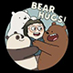

仨带一队
仨带一队团队介绍
时间的车轮越滚越快，余下的日子在翻倍的过。宝贵的光阴就这样混日子、讨生活是不是太可惜了呢？转眼间，昏昏碌碌的大学生活就结束了，好多计划还没完成，好多梦想还没开始，四年就已经过去了。从大一到大三，虽然成绩不错，却没有追求没有梦想，好似一樽行尸走肉，让最好的学习时光白白流逝，好希望能再回到入学的那一刻再重新开始一次。如果说种一棵树最好的时间是大学以前，那其次就是现在。有的人对自己未来一无所知，茫茫然便顺其自然了，但我觉得我应该能做更多的事情。于是乎我决定放弃学习四年的大学专业，放弃这个行业的工作，来到这个我曾经一直向往的地方。如果我无法成为一名前端工程师，就让我做一名编程爱好者吧。
仨带一队队员简介
Grey：乐观向上，积极外向，他的社交属性能够帮团队解决不少问题。
Panda：以他对市场营销和互联网趋势的理解，或许能成为有个不错的产品经理。
Ice bear：能文能武能烧菜，话少冷萌会功夫，果然是一名合格的全栈工程师。
Chloe：爱学习，爱研究，眼镜的厚度已经说明了她知识的深度，她是团队的核心架构师。